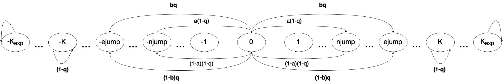
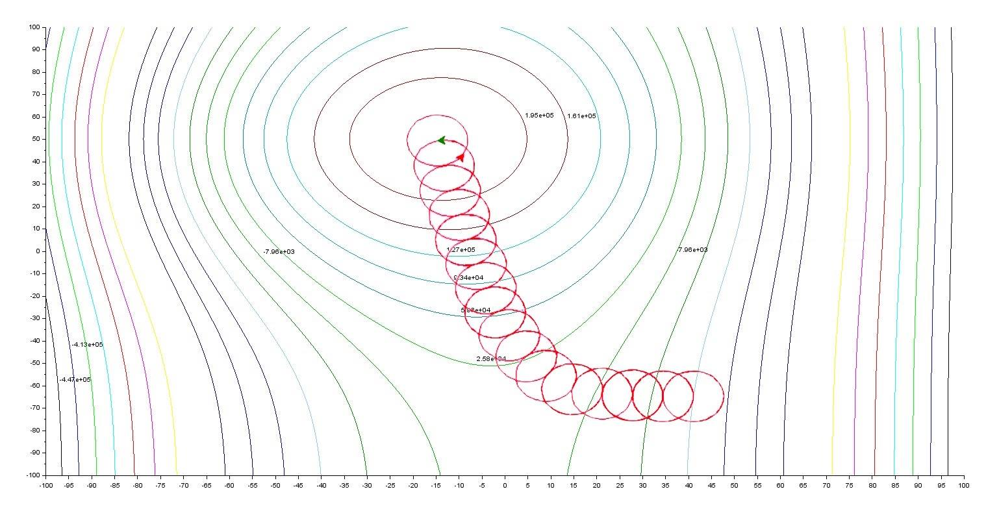
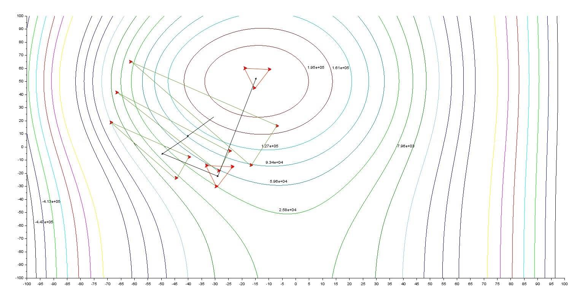

I'm Rohit. I'm a freshman at Georgia Tech studying computer science in the modeling/simulation and intelligence threads along with an Economics minor. I'm interested in software engineering, mobile development and algorithmic design. I have a particular fascination with machine learning and neural networks. Outside of Computer Science, I'm a left arm cricket bowler, a tennis player, and recreational Ultimate Frisbee player. I also enjoy photgraphy. On desktop, you'll see my favorite photo on the right!
About Me
Projects
Home Depot Neural Net Challenge
I created a neural network in Google Tensor Flow and Python to categorically sort product images provided by Home Depot. The convolutional neural net sorted with 91% accuracy.
Nov 17WeLocate
At WeLocate’s core is a webapp that asks the user to choose a location on a map near which they would like to open a business. Through a process of database creation and machine learning, WeLocate provides a map of optimal places to start that business, so that the challenge facing local businesses to fend off nearby competition becomes a little less daunting.
Oct 17
GT Task Manager
GT Task Manager is an app designed to make organizing tasks a worry of the past. The app stores tasks and connects them to a real time database. Equipped with a fully functional login authentication, users can edit and rearrange tasks across all devices. The app is also capable of intelligently designing schedules.
Sept 17Machine Learning Introduction
I programmed two machine learning algorithms in C#: boosted decision trees and a general neural network with gradient descent as back propagation.
June 17Pokemon Go - Swarm Algorithm
To optimize my Pokémon Go loot, I created a distance weighted graph of my local park’s PokéStops and generated a heuristic swarm algorithm to find a Euclidean circuit, finding reasonable success.
Aug 16HiMCM Marathon Modeling
With a team of four, I modeled a triathlon as a Newtonian fluid in C# and used Monte Carlo to model real-life data
Oct 16Research
-
The Impact Of Experts And Noise On Informational Cascades
Often models are used to study Bayesian agents where limited information is available. Models, in which these agents sequentially decide to accept or reject an option while observing previous agent’s decisions, can produce informational cascades. An informational cascade is said to occur when an agent relinquishes their own private information in exchange for a pattern evident in the decisions of previous agents. The model in this paper has two types of agents each with differing signal accuracies: experts and non-experts. The model also incorporates an element of noise causing agents to flip their decision at a low probability. We studied the probability the crowd cascades correctly with respect to noise and expert concentration. The paper showed showed a non-monotonic relationship between both noise and expert concentration. This suggests that a lower noise and a higher expert concentration does not necessarily increase the probability of a correct cascade.
 Download The Paper -
Swarm Research
We explore the applications and development of the Hamiltonian Method of swarm design on low dimensional swarms in order to tackle the swarm design problem. This problem includes questions such as the necessity of swarm capability, the various types of technologies needed for the swarm to function, and the minimal number of agents to use. In order to accomplish this task, we utilize the Hamiltonian Method of Swarm Design in order to describe the changing states of the swarm. We develop a partial derivative gradient matrix that is used to identify the technologies necessary to complete the task. We then utilize this technology matrix by applying it to a simple problem in swarm design by modeling a two agent and three agent gradient based swarm maximum search tasks. We then utilize the results of this method in order to better analyze the more conceptual questions of swarm design.
  Download The Paper
Experience and Leadership
Home Depot ORANGEWORKS
Software Engineering Intern : January 2018
I am creating a metric for Home Depot TypeAhead predictions using Word2Vec and a RNN to create an Entropy model for diversity evaluation. It will be used evaluate modifications in comparison to previous models and current competitors and replaces a current Home Depot biased metric of search diversity with an objective metric derived from external data.
Treasurer of Computational Finance
Present
I handle the club account with student government, organize budgets, and maintain the ledger of voting membership. I also help create undergraduate awareness of the club and initiative by hosting joint master and undergraduate computational contests.
Automated Algorithm Design
Present
I learning to design machine learning, genetic, and evolutionary algorithms to outperform optimization methods and existing algorithms. We will Leverage these algorithms to real datasets beginning with sample Titanic data.
Captain : FRC Robotics Team 2022
September 2015 - July 2017
I was a captain of a 55+ member robotics team participating in the First Robotics Challenge. Throughout the process, I found a family, tuned my mechanical skils, developed my organization and leadership capabilities.
CAD Head : Maker Squad
August 2015 - July 2017
I was a member of my school's Maker Squad. We helped incoming student and faculty utilize the space for their projects.
Education
BS Computer Science
Georgia Institute of Technology
Graduating Fall 2021 : 4.00
High School
Illinois Mathematics and Science Academy
Graduated : 3.88
Online Courses
Udacity: Data Science Analyst Nanodegree Program
Udemy: Apache Spark with Java
Udemy: AWS Machine Learning: A Complete Guide With Python
Udemy: Deep Learning Prerequisites: The Numpy Stack in Python
Udacity: Developing Android Apps
(Enrolled) Udemy: The Full-Stack Web Development Program
Awards
2017
VandyHacks: Best Financial Hack
VandyHacks: Most Disruptive Hack
2016
National Merit Finalist
Meritorious Award in High School Mathematical Contest in Modeling
Representative for International Student Science Fair
Illinois Junior Academy of Science: Navy Award